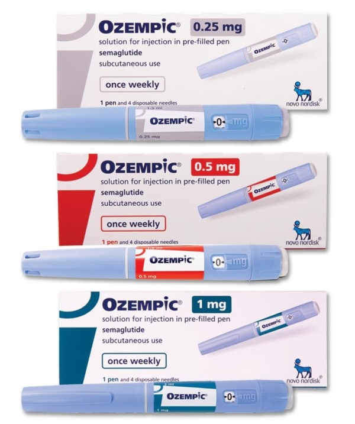

GLP-1 계열 치료제
GLP-1 계열 치료제는 인크레틴 호르몬(GLP-1)의 작용을 모방하여 혈당 조절, 체중 감소, 심혈관 보호 효과까지 기대할 수 있는 혁신 신약입니다. 주로 당뇨병과 비만 치료에 사용되며, 대표 약물로 세마글루타이드(위고비, 오젬픽) 등이 있습니다.
- 작용 원리: 인슐린 분비 촉진, 식욕 억제, 위 배출 지연
- 주요 적용: 제2형 당뇨병, 비만, 대사질환
- 산업/사회 영향: 만성질환 관리 패러다임 전환, 바이오 신약 시장 성장